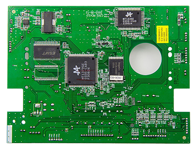

Technical Curriculum
Building Blocks
The Technical Skills curriculum builds upon the foundation constructed throughout the Digital Literacy phase. While the Digital Literacy curriculum developed important digital computing device usage basics and concept awareness, the Technical Skills curriculum presents a more focused educational path designed as a pre-apprenticeship jump-start that prepares participants for a Registered Apprenticeship Program in a technical computer support occupation.
Modules
- Computer Hardware
- Computer Networks
- Virtualization and Cloud Computing
- Hardware and Networking Troubleshooting
- Operating Systems
- Cybersecurity
- Software Troubleshooting
- Operational Procedures
- Privacy, Licensing, Policies
- Mobile Devices
